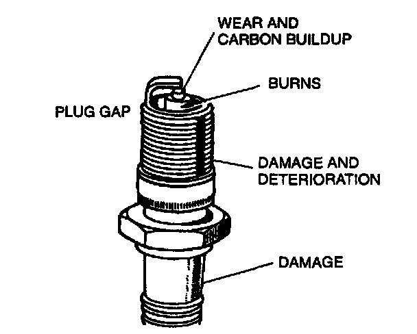

Spark Plug
Check the following and replace the spark plugs as necessary.
1. Damaged insulation
2. Worn electrodes
3. Carbon deposits
If cleaning is necessary, use a plug cleaner or a wire brush. Wipe upper insulator.
4. Damaged gasket
Plug gap: 1.0-1.1 mm (0.040-0.043 in)